1. Tại sao không lưu mật khẩu dạng Plain Text?
1.1. Khái niệm Plain Text
1.1.1. Plain Text là gì?
Trong lĩnh vực bảo mật, Plain Text (văn bản thuần) là dữ liệu được lưu giữ dưới đúng dạng ban đầu mà người dùng cung cấp, không qua bất kỳ quá trình mã hóa hay biến đổi nào.
Đối với mật khẩu, lưu dạng Plain Text nghĩa là: Mật khẩu người dùng nhập vào sẽ được lưu trực tiếp trong cơ sở dữ liệu dưới dạng chuỗi ký tự có thể đọc được.
Ví dụ:
Người dùng đăng ký tài khoản:
- Username: nguyenvana
- Password: 123456
Dữ liệu được lưu xuống Database:
| id | username | password |
|---|---|---|
| 1 | nguyenvana | 123456 |
Lưu ý: Password trong database = Password thật của người dùng. Bất kỳ ai có quyền truy cập database đều có thể nhìn thấy mật khẩu.
1.2. Tại sao nhiều hệ thống ban đầu lại lưu Plain Text?
Trong giai đoạn đầu của phát triển phần mềm, nhiều lập trình viên mới thường có suy nghĩ: "Chỉ cần lưu username và password xuống database, khi đăng nhập thì lấy ra so sánh là được."
Ví dụ:
Khi đăng nhập: Người dùng nhập:
- username: admin
- password: 123456
Server thực hiện:
if (username.equals(database.username) && password.equals(database.password)) {
loginSuccess();
}
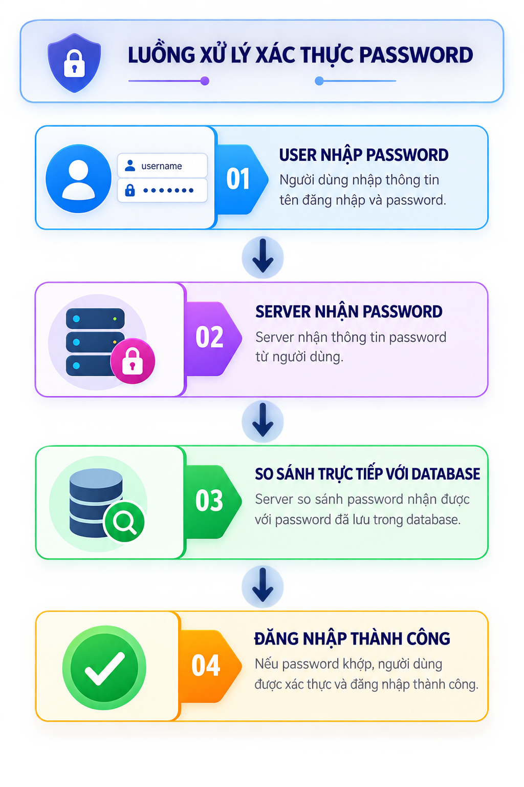
Cách này có thể hoạt động về mặt chức năng. Tuy nhiên, về mặt bảo mật thì rất nguy hiểm.
1.3. Nguy cơ khi lưu mật khẩu dạng Plain Text
1.3.1. Rò rỉ toàn bộ mật khẩu khi database bị tấn công
Đây là nguy cơ nghiêm trọng nhất.
Giả sử một website có bảng users:
| id | username | password |
|---|---|---|
| 1 | admin | admin123 |
| 2 | manh | 123456 |
| 3 | user01 | password123 |
Một hacker khai thác được lỗ hổng và lấy được database. Khi đó hacker có ngay:
- admin / admin123
- manh / 123456
- user01 / password123
Không cần giải mã.
1.3.2. Nhân viên quản trị database cũng có thể xem mật khẩu
Một vấn đề khác: Không chỉ hacker. Những người có quyền truy cập database cũng có thể nhìn thấy mật khẩu.
Ví dụ: Database administrator mở bảng:
SELECT * FROM users;
Kết quả:
| id | username | password |
|---|---|---|
| 1 | admin | 123456 |
| 2 | manh | abc123 |
Như vậy: Developer, Database Administrator, Người quản trị hệ thống đều có thể biết mật khẩu người dùng. Một hệ thống bảo mật tốt không được phép xảy ra điều này.
1.4. Người dùng thường sử dụng lại mật khẩu
Một thực tế phổ biến: Nhiều người dùng sử dụng cùng một mật khẩu cho nhiều dịch vụ:
- Facebook: 123456
- Email: 123456
- Ngân hàng: 123456
Nếu một website bị lộ database:
- username: manh
- password: 123456
Kẻ tấn công có thể thử mật khẩu này trên: Email, Mạng xã hội, Website khác, Dịch vụ tài chính.
Hiện tượng này gọi là: Password Reuse Attack (Tấn công do sử dụng lại mật khẩu)
1.5. Nguyên tắc bảo mật mật khẩu
Một nguyên tắc quan trọng trong bảo mật: Hệ thống không bao giờ được lưu mật khẩu thật của người dùng.
Database chỉ nên lưu Password Hash chứ không lưu Original Password.
Ví dụ:
- Không lưu:
123456 - Mà lưu:
$2a$10$8Y7nLk9PqW3...
1.6. Hash Password là gì?
1.6.1. Khái niệm Hash
Hash là quá trình biến đổi dữ liệu đầu vào thành một chuỗi có độ dài cố định.
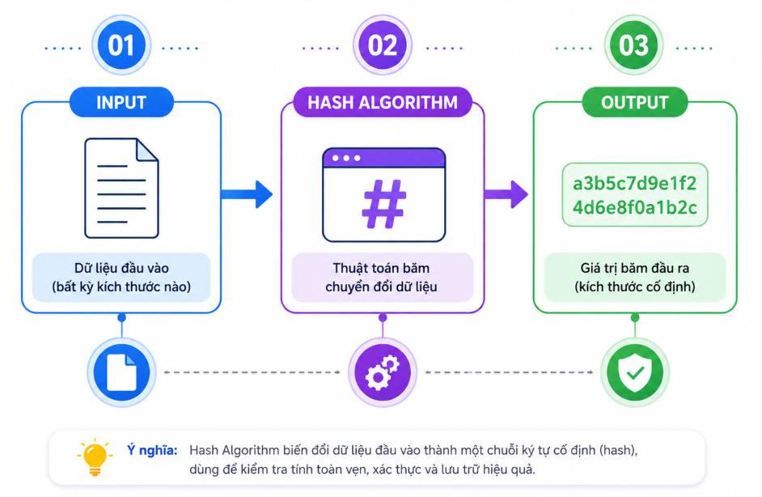
Ví dụ:
- Input: 123456
- Sau khi hash: e10adc3949ba59abbe56e057f20f883e
1.6.2. Đặc điểm của Hash
Đặc điểm 1: Một chiều
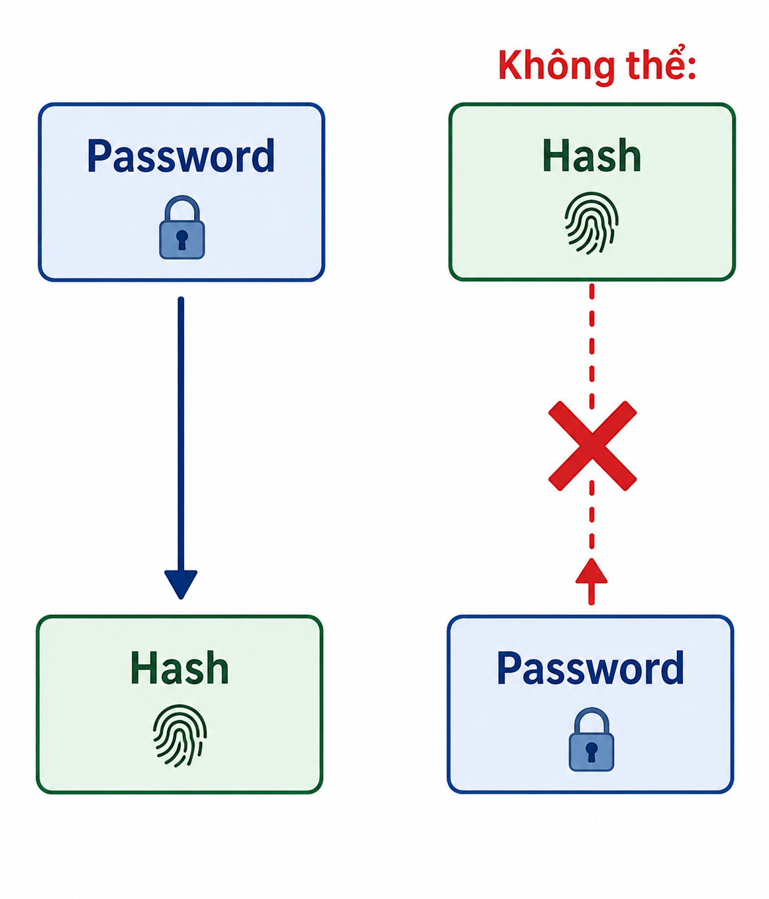
Ví dụ: Có e10adc3949ba59abbe56e057f20f883e không thể lấy lại 123456.
Đặc điểm 2: Cùng dữ liệu có thể tạo cùng kết quả
Ví dụ: Hash("123456") luôn cho e10adc3949ba59abbe56e057f20f883e.
Vấn đề: Nếu tất cả người dùng dùng 123456 thì hash giống nhau.
| User | Password Hash |
|---|---|
| A | abcxyz |
| B | abcxyz |
| C | abcxyz |
Điều này tạo ra nguy cơ bị phân tích.
1.7. Salt - giải pháp cải thiện bảo mật
Để giải quyết vấn đề trên, hệ thống sử dụng Salt.
1.7.1. Salt là gì?
Salt là một chuỗi dữ liệu ngẫu nhiên được thêm vào mật khẩu trước khi hash.
Ví dụ: Mật khẩu 123456, không hash trực tiếp: Hash(123456) mà: Password + Salt.
Ví dụ: 123456 + A7x9 → Hash(123456A7x9).
1.7.2. Kết quả sử dụng Salt
Hai người cùng mật khẩu 123456 nhưng có salt khác nhau:
- User A:
123456 + abc→ Hash:$2a$10$AAA... - User B:
123456 + xyz→ Hash:$2a$10$BBB...
Kết quả: Hash khác nhau.
1.8. Spring Security xử lý mật khẩu như thế nào?
Trong Spring Security, mật khẩu không được kiểm tra bằng cách: password nhập vào = password database.
Mà:
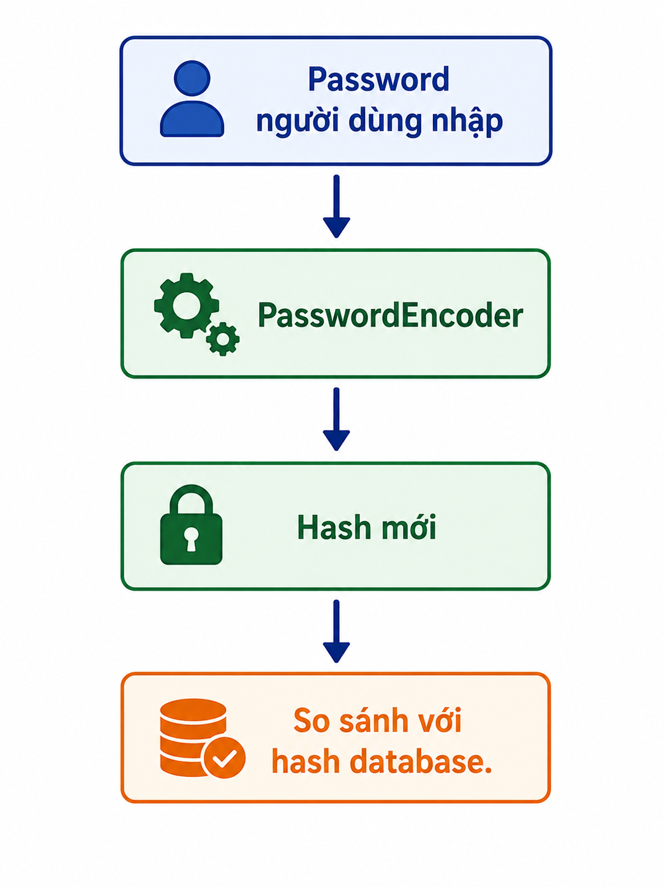
Ví dụ: Database: $2a$10$Xyz123..., Người dùng nhập: 123456.
Spring Security: BCrypt("123456") sau đó matches(). Nếu đúng: Authentication Success.
1.9. Kết luận mục 1
| Vấn đề | Hậu quả |
|---|---|
| Database bị lộ | Lộ toàn bộ tài khoản |
| Admin database xem được | Mất tính riêng tư |
| Người dùng dùng lại mật khẩu | Ảnh hưởng nhiều hệ thống |
| Không có Salt | Dễ phân tích mật khẩu |
Giải pháp: Không lưu Password thật → Hash Password → Sử dụng BCrypt → Spring Security xác thực bằng PasswordEncoder
2. Thuật toán BCrypt
2.1. Tổng quan về BCrypt
2.1.1. BCrypt là gì?
BCrypt là một thuật toán hash mật khẩu (password hashing algorithm) được thiết kế chuyên biệt để bảo vệ mật khẩu người dùng.
BCrypt được phát triển dựa trên thuật toán mã hóa Blowfish bởi Niels Provos và David Mazières vào năm 1999.
Mục tiêu ban đầu của BCrypt là: Tạo ra một thuật toán lưu trữ mật khẩu an toàn, có khả năng chống lại các phương pháp dò tìm mật khẩu bằng máy tính tốc độ cao.
Hiện nay BCrypt được sử dụng rộng rãi trong: Ứng dụng Web, Hệ thống thương mại điện tử, Hệ thống ngân hàng, API Backend, Framework bảo mật như Spring Security.
2.2. BCrypt khác gì so với mã hóa thông thường?
Một lỗi phổ biến của lập trình viên mới là nhầm lẫn giữa Encryption (mã hóa) và Hashing (băm dữ liệu). Hai khái niệm này hoàn toàn khác nhau.
2.2.1. Encryption (mã hóa)
Mã hóa là quá trình biến dữ liệu ban đầu thành dữ liệu bị che giấu.
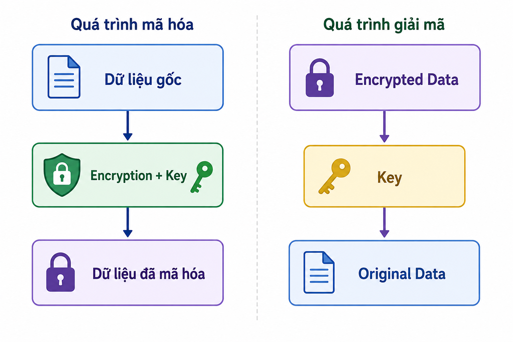
Ví dụ: Message Hello → Encrypt X7a9Pq2 → Decrypt Hello.
Mục đích: Bảo vệ dữ liệu khi truyền, Lưu trữ dữ liệu cần lấy lại (HTTPS, Mã hóa file, Token).
2.2.2. Hashing (băm dữ liệu)
Hashing hoạt động khác.
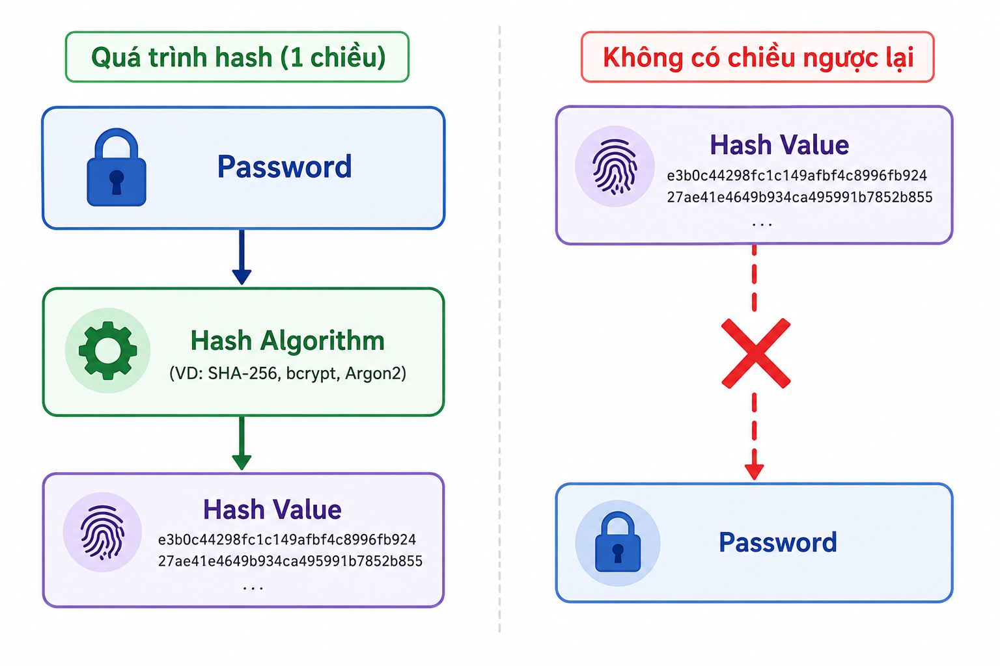
Ví dụ: Input 123456 → BCrypt $2a$10$8Yd7Kp9L... không thể lấy lại 123456.
2.3. Tại sao BCrypt được dùng để lưu mật khẩu?
Các thuật toán hash thông thường như MD5, SHA-1, SHA-256 không phù hợp để lưu password.
Lý do: Chúng được thiết kế để tính toán nhanh, kiểm tra dữ liệu, kiểm tra checksum.
Ví dụ: SHA256("123456") thực hiện cực kỳ nhanh. Điều này tốt cho kiểm tra file nhưng nguy hiểm với password.
Ví dụ tấn công Brute Force
Giả sử hacker có database:
- username: admin
- password hash: e10adc3949ba59abbe56e057f20f883e
Hacker thử: 000000, 000001, 000002, ..., 123456
Vì SHA-256 rất nhanh: 1 giây có thể thử hàng triệu lần. Mật khẩu yếu có thể bị tìm ra rất nhanh.
2.4. BCrypt giải quyết vấn đề này như thế nào?
BCrypt được thiết kế để:
- Chậm có chủ đích
- Tốn tài nguyên CPU
- Có Salt tự động
- Có thể điều chỉnh độ khó
Điều này làm cho việc dò mật khẩu trở nên khó khăn hơn.
2.5. Cơ chế hoạt động của BCrypt
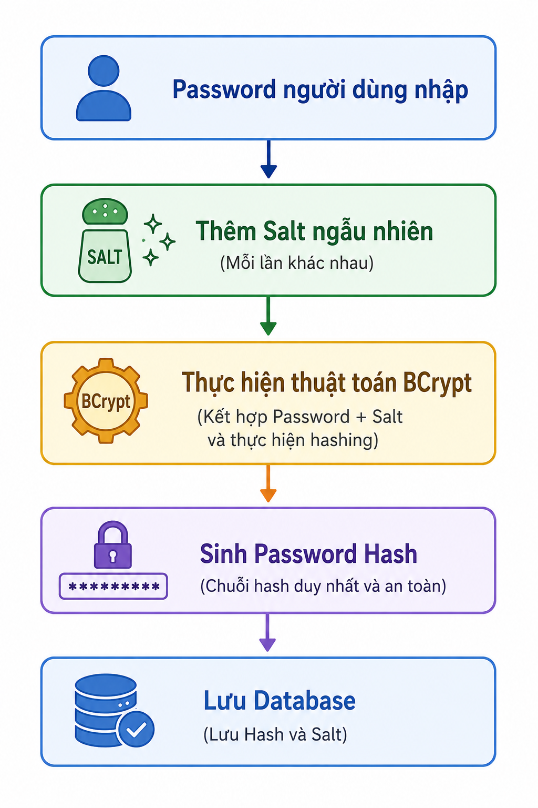
Ví dụ: Người dùng đăng ký Password: 123456. BCrypt tạo Salt: $2a$10$K8s9dP.... Kết hợp: 123456 + Salt. Sau đó tạo Hash: $2a$10$K8s9dP8Hj.... Database chỉ lưu: $2a$10$K8s9dP8Hj...
2.6. Cấu trúc của một chuỗi BCrypt
Một chuỗi BCrypt thường có dạng:
$2a$10$N9qo8uLOickgx2ZMRZoMyeIjZAgcfl7p92ldGxad68LJZdL17lhWy
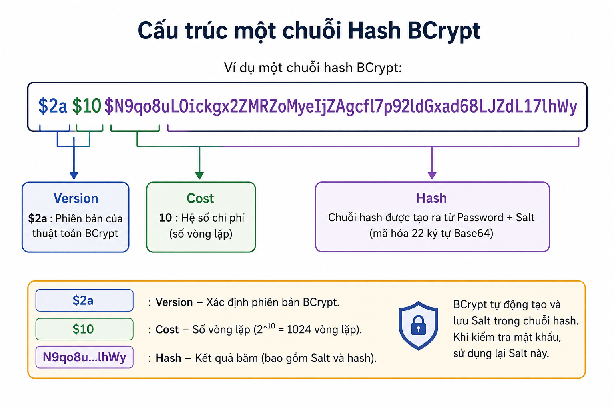
2.6.1. Version
Phần đầu $2a$ cho biết phiên bản BCrypt.
| Version | Ý nghĩa |
|---|---|
| 2a | Phiên bản phổ biến |
| 2b | Phiên bản cải tiến |
| 2y | Một biến thể khác |
Trong Spring Security thường sử dụng $2a$ hoặc $2b$.
2.6.2. Cost Factor
Ví dụ: $2a$10$, số 10 gọi là Cost Factor hoặc Work Factor. Nó quyết định độ khó của thuật toán.
Ví dụ: new BCryptPasswordEncoder(10); nghĩa là Cost = 10.
2.7. Work Factor trong BCrypt
2.7.1. Work Factor là gì?
Work Factor xác định số lần BCrypt thực hiện các phép tính nội bộ.
Công thức: Số vòng lặp = 2^cost
- Cost = 10: 2^10 = 1024 vòng
- Cost = 12: 2^12 = 4096 vòng
Cost càng lớn: Hash càng chậm, Hacker càng khó dò, Server cần nhiều tài nguyên hơn.
2.7.2. Chọn Cost Factor bao nhiêu?
| Cost | Mức độ |
|---|---|
| 4 | Quá yếu |
| 8 | Thấp |
| 10 | Thông dụng |
| 12 | Bảo mật cao |
| 14 | Rất chậm |
Spring Security thường dùng new BCryptPasswordEncoder() mặc định Strength = 10.
2.8. BCrypt và Salt
2.8.1. Vấn đề khi không có Salt
Giả sử hai người User A và User B đều có password = 123456. Nếu dùng SHA: Hash A = abcxyz, Hash B = abcxyz. Giống nhau.
2.8.2. BCrypt tự sinh Salt
BCrypt tự tạo Salt mỗi lần mã hóa.
Ví dụ:
- Lần 1:
encoder.encode("123456")→$2a$10$abc123.... - Lần 2:
encoder.encode("123456")→$2a$10$xyz789....
Mặc dù Password giống nhau nhưng Hash khác nhau.
2.9. BCrypt kiểm tra mật khẩu như thế nào?
Nếu BCrypt có Salt khác nhau, làm sao kiểm tra đăng nhập?
Ví dụ: Database $2a$10$abc123xyz..., người dùng nhập 123456.
Spring không tạo hash mới rồi so sánh trực tiếp. Nó làm:
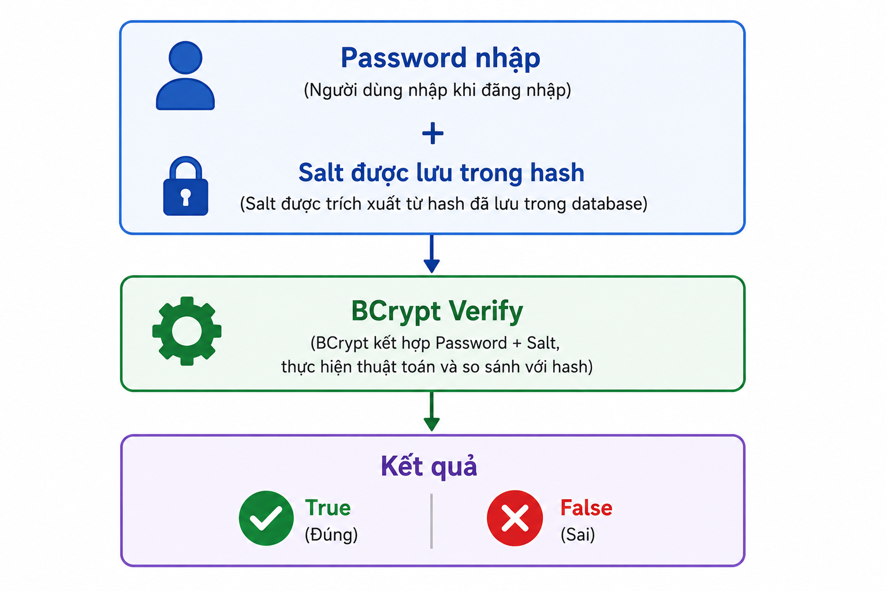
Trong Spring Security:
passwordEncoder.matches("123456", "$2a$10$abc123...");
Kết quả: true. Nếu sai: false.
2.10. BCrypt chống tấn công như thế nào?
2.10.1. Brute Force Attack
Brute Force là cách thử tất cả khả năng mật khẩu (000000, 000001, ..., 999999).
- Với SHA: 1 triệu lần thử rất nhanh
- Với BCrypt: 1 triệu lần thử rất chậm (mỗi lần hash phải tốn nhiều tài nguyên)
2.10.2. Rainbow Table Attack
Rainbow Table là danh sách Password → Hash (ví dụ: 123456 → e10adc3949...). BCrypt chống lại bằng Salt ngẫu nhiên, hash khác nhau mỗi lần.
2.11. Ví dụ sử dụng BCrypt trong Java
import org.springframework.security.crypto.bcrypt.BCryptPasswordEncoder; public class TestBCrypt { public static void main(String[] args) { BCryptPasswordEncoder encoder = new BCryptPasswordEncoder(); String password = "123456"; String hash = encoder.encode(password); System.out.println(hash); boolean result = encoder.matches(password, hash); System.out.println(result); } }
Kết quả: $2a$10$7H9K.... và true.
2.12. Kết luận mục 2
| Đặc điểm | Ý nghĩa |
|---|---|
| Hash một chiều | Không thể lấy lại password |
| Salt tự động | Tránh hash trùng nhau |
| Cost Factor | Có thể tăng độ khó |
| Chậm có chủ đích | Chống Brute Force |
| Được hỗ trợ trong Spring Security | Dễ triển khai |
3. PasswordEncoder trong Spring Security
3.1. Tổng quan về PasswordEncoder
3.1.1. PasswordEncoder là gì?
Trong Spring Security, PasswordEncoder là một interface dùng để xử lý mật khẩu trong quá trình:
- Mã hóa mật khẩu trước khi lưu vào database
- Kiểm tra mật khẩu khi người dùng đăng nhập
- So sánh mật khẩu người dùng nhập với mật khẩu đã được mã hóa
Package: org.springframework.security.crypto.password.PasswordEncoder
Có thể hiểu đơn giản: PasswordEncoder là lớp trung gian giữa Mật khẩu người dùng và Mật khẩu đã mã hóa → Database.
Ví dụ: Người dùng đăng ký Username: manh, Password: 123456. Spring Security không lưu 123456 mà gọi passwordEncoder.encode("123456"). Kết quả: $2a$10$8Kx9dPq7L.... sau đó lưu vào database.
3.2. Tại sao Spring Security sử dụng PasswordEncoder?
3.2.1. Không nên xử lý password trực tiếp
Một cách làm sai:
if (password.equals(user.getPassword())) {
loginSuccess();
}
Mặc dù chạy được nhưng cực kỳ nguy hiểm. Vấn đề: Database chứa mật khẩu thật. Người có quyền truy cập database biết password. Nếu bị lộ dữ liệu, toàn bộ tài khoản bị mất.
3.2.2. PasswordEncoder tạo lớp bảo vệ
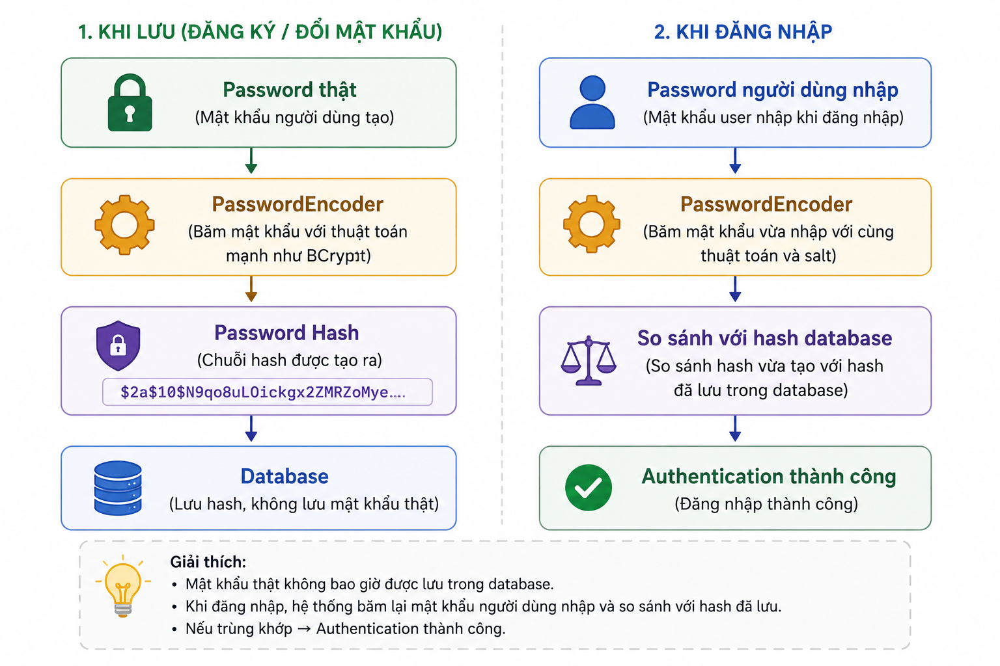
3.3. Cấu trúc của PasswordEncoder
PasswordEncoder là một interface:
public interface PasswordEncoder { String encode(CharSequence rawPassword); boolean matches(CharSequence rawPassword, String encodedPassword); default boolean upgradeEncoding(String encodedPassword) { return false; } }
| Phương thức | Chức năng |
|---|---|
| encode() | Mã hóa mật khẩu |
| matches() | Kiểm tra mật khẩu |
3.4. Phương thức encode()
3.4.1. Khái niệm
encode() dùng để biến mật khẩu dạng thường thành mật khẩu đã hash.
Cú pháp: String encode(CharSequence rawPassword);
- Tham số: rawPassword - Mật khẩu ban đầu
- Kết quả trả về: String - Chuỗi password đã mã hóa
3.4.2. Ví dụ sử dụng
@Autowired private PasswordEncoder passwordEncoder; String password = passwordEncoder.encode("123456"); // Kết quả: $2a$10$N9qo8uLOickgx2ZMRZoMye....
Database lưu:
| username | password |
|---|---|
| manh | $2a$10$N9qo8uLOickgx2ZMRZoMye... |
3.5. Encode nhiều lần có giống nhau không?
Đây là điểm rất quan trọng.
passwordEncoder.encode("123456"); // $2a$10$ABC123.... passwordEncoder.encode("123456"); // $2a$10$XYZ789....
Hai kết quả khác nhau. Nguyên nhân: BCrypt tự tạo Salt ngẫu nhiên.
123456 + Salt A → Hash A 123456 + Salt B → Hash B
3.6. Phương thức matches()
3.6.1. Khái niệm
matches() dùng để kiểm tra: Mật khẩu người dùng nhập có đúng với mật khẩu đã lưu trong database hay không.
Cú pháp: boolean matches(CharSequence rawPassword, String encodedPassword);
- rawPassword: Password người dùng nhập
- encodedPassword: Password hash trong database
3.7. Ví dụ matches()
Database: username: admin, password: $2a$10$abcxyz...
Người dùng đăng nhập: username: admin, password: 123456
passwordEncoder.matches("123456", "$2a$10$abcxyz..."); // true
Nếu đúng: true → Cho phép đăng nhập. Nếu sai: false → 401 Unauthorized.
3.8. Tại sao không dùng encode() để kiểm tra?
Một sinh viên thường mắc lỗi:
if (passwordEncoder.encode("123456").equals(databasePassword)) { login(); }
Cách này sai vì:
- Lần 1:
encode("123456")→$2a$10$ABC... - Database:
$2a$10$XYZ... - So sánh:
ABC == XYZ→false
Đúng phải dùng matches().
3.9. PasswordEncoder trong quá trình đăng ký
Bước 1: Người dùng nhập username: manh, password: 123456.
Bước 2: Controller nhận dữ liệu:
@PostMapping("/register") public User register(@RequestBody User user) { }
Bước 3: Service mã hóa password:
user.setPassword(passwordEncoder.encode(user.getPassword()));
Bước 4: Lưu database: username: manh, password: $2a$10$8Hs7K...
3.10. PasswordEncoder trong quá trình đăng nhập
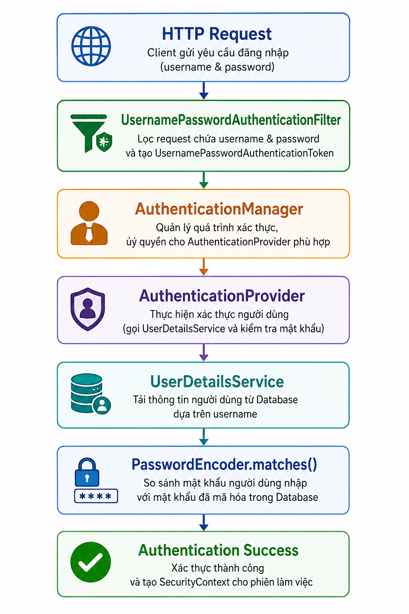
3.11. Các loại PasswordEncoder trong Spring Security
Spring Security cung cấp nhiều loại:
1. BCryptPasswordEncoder - Sử dụng thuật toán BCrypt. Được khuyến nghị sử dụng.
@Bean PasswordEncoder passwordEncoder() { return new BCryptPasswordEncoder(); }
2. NoOpPasswordEncoder - Không mã hóa. NoOpPasswordEncoder.getInstance(); Password: 123456, Database: 123456. Không an toàn. Chỉ dùng Demo, Học tập. Không dùng thực tế.
3. SCryptPasswordEncoder - Sử dụng thuật toán SCrypt. Có độ bảo mật cao.
4. Argon2PasswordEncoder - Thuật toán hiện đại. Được thiết kế chống GPU Attack, Brute Force.
3.12. Cấu hình PasswordEncoder trong Spring Security
@Configuration public class SecurityConfig { @Bean public PasswordEncoder passwordEncoder() { return new BCryptPasswordEncoder(); } }
Sau đó có thể Inject:
@Service public class UserService { @Autowired private PasswordEncoder passwordEncoder; }
3.13. Vai trò của PasswordEncoder trong hệ thống Authentication
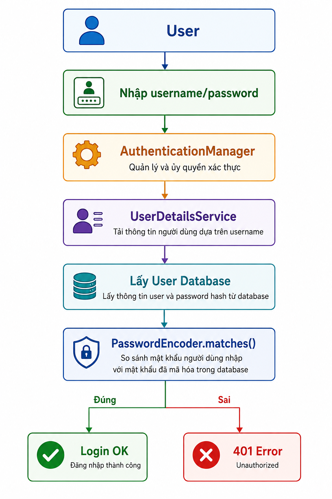
3.14. Tổng kết mục 3
| Kiến thức | Ý nghĩa |
|---|---|
| PasswordEncoder | Interface xử lý mật khẩu |
| encode() | Mã hóa password trước khi lưu |
| matches() | Kiểm tra password khi login |
| Không dùng encode để so sánh | Vì BCrypt có Salt |
| BCryptPasswordEncoder | Implementation phổ biến nhất |
| Bean PasswordEncoder | Cung cấp cho Spring quản lý |
Đăng ký: Password → encode() → Database Đăng nhập: Password nhập → matches() → Database Hash
4. BCryptPasswordEncoder trong Spring Security
4.1. Tổng quan về BCryptPasswordEncoder
4.1.1. BCryptPasswordEncoder là gì?
BCryptPasswordEncoder là một class có sẵn trong Spring Security, được sử dụng để thực hiện việc mã hóa mật khẩu bằng thuật toán BCrypt. Nó là một implementation (lớp triển khai) của interface PasswordEncoder.
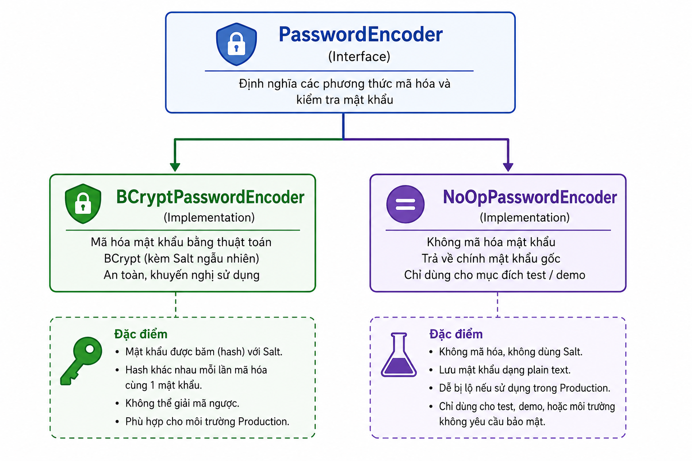
- PasswordEncoder: Quy định các phương thức cần có
- BCryptPasswordEncoder: Thực hiện mã hóa bằng BCrypt
4.1.2. Vị trí của BCryptPasswordEncoder trong Spring Security
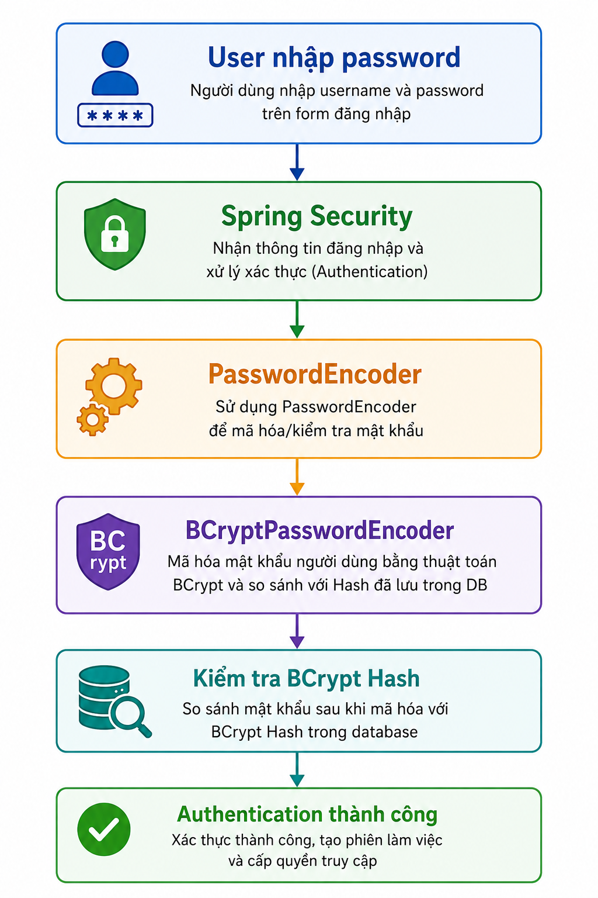
Spring Security không tự biết cách mã hóa password. Chúng ta phải cung cấp @Bean PasswordEncoder passwordEncoder() để Spring sử dụng.
4.2. Dependency cần thiết
Để sử dụng BCryptPasswordEncoder, project cần có Spring Security.
<dependency>
<groupId>org.springframework.boot</groupId>
<artifactId>spring-boot-starter-security</artifactId>
</dependency>
Spring Boot sẽ tự động cung cấp org.springframework.security.crypto.password.BCryptPasswordEncoder.
4.3. Tạo BCryptPasswordEncoder Bean
4.3.1. Bean là gì?
Trong Spring, Bean là một object được Spring tạo ra và quản lý vòng đời. Thay vì tự tạo PasswordEncoder encoder = new BCryptPasswordEncoder(); chúng ta để Spring quản lý.
4.3.2. Cấu hình trong SecurityConfig
Tạo file: config/SecurityConfig.java
@Configuration @EnableWebSecurity public class SecurityConfig { @Bean public PasswordEncoder passwordEncoder() { return new BCryptPasswordEncoder(); } }
Giải thích:
- @Bean: Thông báo cho Spring: Hãy tạo object PasswordEncoder và lưu vào Application Context.
- PasswordEncoder: Kiểu trả về cho phép các class khác sử dụng
@Autowired private PasswordEncoder passwordEncoder; - new BCryptPasswordEncoder(): Tạo một object sử dụng thuật toán BCrypt.
4.4. Sử dụng BCryptPasswordEncoder để mã hóa password
4.4.1. Ví dụ cơ bản
public class TestBCrypt { public static void main(String[] args) { BCryptPasswordEncoder encoder = new BCryptPasswordEncoder(); String password = "123456"; String hash = encoder.encode(password); System.out.println(hash); } }
Kết quả ví dụ: $2a$10$wX9hKJ8s7dL3....
Mỗi lần chạy sẽ ra kết quả khác nhau:
- Lần 1:
$2a$10$ABC123.... - Lần 2:
$2a$10$XYZ789....
Mặc dù password = 123456.
4.5. Phân tích kết quả BCrypt
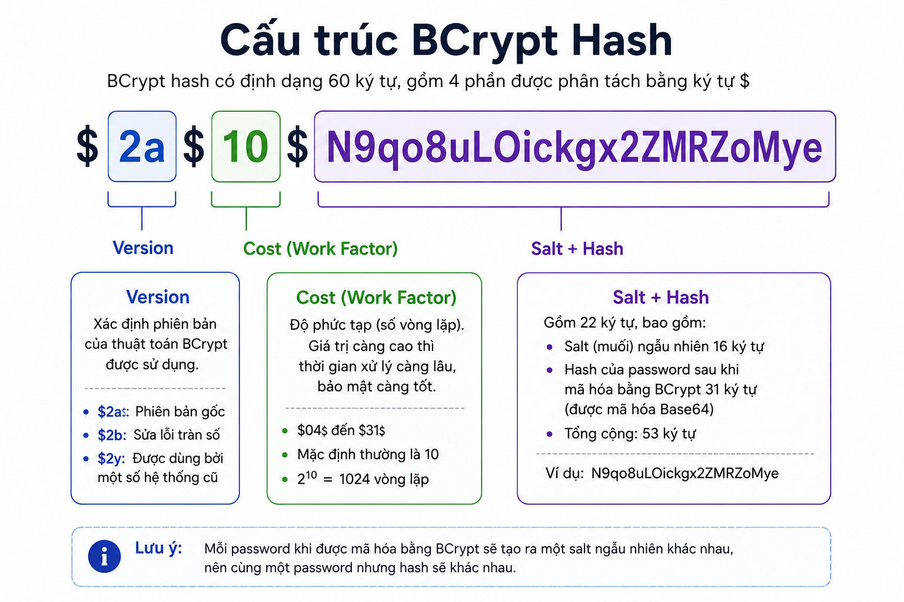
4.6. Cấu hình Strength cho BCryptPasswordEncoder
4.6.1. Constructor mặc định
new BCryptPasswordEncoder(); → Strength = 10
4.6.2. Tự cấu hình Strength
@Bean public PasswordEncoder passwordEncoder() { return new BCryptPasswordEncoder(12); }
Ở đây Strength = 12.
4.6.3. So sánh Strength
| Strength | Đặc điểm |
|---|---|
| 4 | Rất nhanh, không an toàn |
| 8 | Thấp |
| 10 | Thông dụng |
| 12 | Bảo mật cao |
| 14 | Chậm |
Trong ứng dụng thực tế: 10 - 12 là mức thường được lựa chọn.
4.7. Kiểm tra mật khẩu với matches()
4.7.1. Vấn đề
Giả sử database lưu: $2a$10$ABCXYZ...., người dùng nhập: 123456.
Không thể: encode("123456") == databasePassword vì encode() sinh hash mới.
4.7.2. Sử dụng matches()
BCryptPasswordEncoder encoder = new BCryptPasswordEncoder(); String password = "123456"; String hash = encoder.encode(password); boolean result = encoder.matches(password, hash); System.out.println(result); // true
Nếu encoder.matches("abcdef", hash); → false.
4.8. Tích hợp BCryptPasswordEncoder vào Service
Giả sử có Entity:
@Entity public class User { @Id @GeneratedValue(strategy = GenerationType.IDENTITY) private Integer id; private String username; private String password; private String role; private String enabled; }
SecurityConfig
@Configuration @EnableWebSecurity public class SecurityConfig { @Bean public PasswordEncoder passwordEncoder() { return new BCryptPasswordEncoder(); } }
4.8.1. UserService
@Service public class UserService { @Autowired private UserRepository userRepository; @Autowired private PasswordEncoder passwordEncoder; public User save(User user) { String encodedPassword = passwordEncoder.encode(user.getPassword()); user.setPassword(encodedPassword); return userRepository.save(user); } }
4.8.2. Luồng đăng ký
Người dùng gửi: { "username": "user1", "password": "123456", "role": "USER", "enabled": true}
- Controller nhận: password = 123456
- Service:
encode("123456") - Database: username:
manh, password:$2a$10$8Kdj29....
4.9. BCryptPasswordEncoder trong Authentication
Khi đăng nhập:
Request: username: manh, password: 123456
Spring Security:
- Bước 1: Tìm user: UserDetailsService
- Bước 2: Lấy password trong database:
$2a$10$ABC... - Bước 3: Gọi:
passwordEncoder.matches("123456", "$2a$10$ABC..."); - Bước 4: Kết quả: Đúng → Authentication Success, Sai → 401 Unauthorized
4.10. Những lỗi khi sử dụng BCryptPasswordEncoder
Lỗi 1: Encode password ở Controller
Sai:
@PostMapping public User save(User user) { user.setPassword(encoder.encode(user.getPassword())); }
Vấn đề: Controller chỉ nên nhận request. Nên đặt logic ở Service Layer.
Lỗi 2: Encode password nhiều lần
Sai:
user.setPassword(encoder.encode(encoder.encode(password)));
Kết quả: Hash của Hash → Login thất bại.
Lỗi 3: Database lưu password quá ngắn
Sai: password VARCHAR(20)
BCrypt hash dài khoảng 60 ký tự. Nên dùng password VARCHAR(100) hoặc VARCHAR(255).
5. Cập nhật UserDetailsService sử dụng BCrypt
Ở bài trước ta có:
@Bean public UserDetailsService userDetailsService() { UserDetails user = User.builder() .username("manh") .password("{noop}123456") .roles("USER") .build(); return new InMemoryUserDetailsManager(user); }
Vấn đề: .password("{noop}123456") nghĩa là mật khẩu đang lưu dạng Plain Text. Spring Security không mã hóa.
| username | password |
|---|---|
| manh | 123456 |
Sau khi học BCrypt, ta thay đổi:
123456 → BCrypt → $2a$10$8sd78f9sd7f8sd...
5.1. Tạo PasswordEncoder
Trong SecurityConfig:
@Bean public PasswordEncoder passwordEncoder() { return new BCryptPasswordEncoder(); }
Bean này sẽ được Spring quản lý. Nó có nhiệm vụ: Mã hóa mật khẩu, Kiểm tra mật khẩu khi đăng nhập.
5.2. Tạo mật khẩu BCrypt
Ta cần tạo mật khẩu đã mã hóa trước.
@SpringBootApplication public class DemoApplication { public static void main(String[] args) { SpringApplication.run(DemoApplication.class, args); } @Bean CommandLineRunner testPassword(PasswordEncoder encoder) { return args -> { String password = encoder.encode("123456"); System.out.println(password); }; } }
Khi chạy: Ví dụ kết quả $2a$10$7w8sd7f8sd7f8sdf87sdf. Mỗi lần chạy sẽ khác nhau.
5.3. Cập nhật UserDetailsService
Bây giờ thay .password("{noop}123456") bằng .password("$2a$10$7w8sd7f8sd7f8sdf87sdf")
@Bean public UserDetailsService userDetailsService() { UserDetails user = User.builder() .username("manh") .password("$2a$10$7w8sd7f8sd7f8sdf87sdf") .roles("USER") .build(); return new InMemoryUserDetailsManager(user); }
5.4. Nhưng không nên tự copy BCrypt thủ công
Cách trên chỉ để minh họa. Thực tế nên tạo user như sau:
@Bean public UserDetailsService userDetailsService(PasswordEncoder encoder) { UserDetails user = User.builder() .username("manh") .password(encoder.encode("123456")) .roles("USER") .build(); return new InMemoryUserDetailsManager(user); }
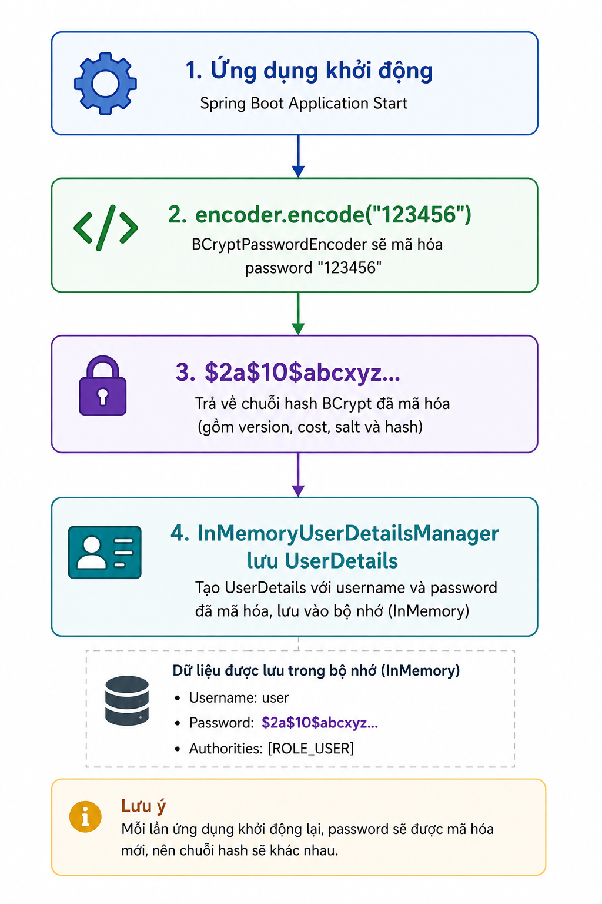
5.5. SecurityConfig hoàn chỉnh sau khi cập nhật
@Configuration @EnableWebSecurity public class SecurityConfig { @Bean public SecurityFilterChain securityFilterChain(HttpSecurity http) throws Exception { http .csrf(csrf -> csrf.disable()) .authorizeHttpRequests(auth -> auth .anyRequest().authenticated() ) .httpBasic(Customizer.withDefaults()); return http.build(); } @Bean public UserDetailsService userDetailsService(PasswordEncoder encoder) { UserDetails user = User.builder() .username("manh") .password(encoder.encode("123456")) .roles("USER") .build(); return new InMemoryUserDetailsManager(user); } @Bean public PasswordEncoder passwordEncoder() { return new BCryptPasswordEncoder(); } }
5.6. Kiểm tra đăng nhập
Request: username: manh, password: 123456
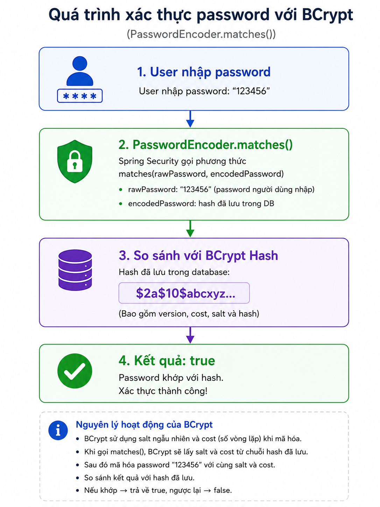
Kết quả: HTTP 200 OK
7. Lỗi thường gặp
Trong quá trình sử dụng BCryptPasswordEncoder, sinh viên thường gặp một số lỗi phổ biến. Phần này sẽ phân tích nguyên nhân và cách khắc phục để giúp người học dễ dàng xử lý khi thực hành.
7.1. Lỗi 1: So sánh mật khẩu bằng dấu equals()
Hiện tượng
Sinh viên thường viết:
BCryptPasswordEncoder encoder = new BCryptPasswordEncoder(); String hash = encoder.encode("123456"); if (encoder.encode("123456").equals(hash)) { System.out.println("Đăng nhập thành công"); }
Kết quả: Không in ra "Đăng nhập thành công" mặc dù mật khẩu đều là 123456.
Nguyên nhân
Mỗi lần gọi encoder.encode("123456"); BCrypt sẽ sinh Salt mới và chuỗi hash mới.
- Lần 1:
$2a$10$ABC123... - Lần 2:
$2a$10$XYZ789...
Hai chuỗi hash khác nhau. Do đó equals() luôn trả về false.
Cách khắc phục
Không sử dụng equals(). Mà sử dụng:
encoder.matches("123456", hash);
matches() sẽ tự động đọc Salt từ chuỗi hash, thực hiện lại thuật toán BCrypt và so sánh kết quả.
7.2. Lỗi 2: Cho rằng BCrypt có thể giải mã
Hiện tượng
Nhiều sinh viên tìm cách viết: encoder.decode(hash); hoặc encoder.decrypt(hash);
Nguyên nhân
BCrypt là thuật toán Hash, không phải Encryption. Hash chỉ có một chiều:
Password → BCrypt → Hash
Không tồn tại chiều ngược lại: Hash → X → Password
Do đó decode() và decrypt() không tồn tại.
Cách khắc phục
Khi cần kiểm tra mật khẩu, sử dụng encoder.matches(password, hash); thay vì cố gắng giải mã chuỗi hash.
7.3. Lỗi 3: Nghĩ rằng cùng mật khẩu sẽ cho cùng kết quả
Hiện tượng
Sinh viên chạy:
System.out.println(encoder.encode("123456")); System.out.println(encoder.encode("123456"));
Kết quả: $2a$10$A... và $2a$10$B... khác nhau. Sau đó nghĩ rằng chương trình bị lỗi.
Nguyên nhân
BCrypt luôn tạo Salt ngẫu nhiên. Do đó 123456 không bao giờ sinh cùng một chuỗi hash. Đây là cơ chế bảo mật của BCrypt.
Cách khắc phục
Đây không phải lỗi. Đó là hành vi đúng của BCrypt. Muốn kiểm tra mật khẩu phải dùng matches().
7.4. Lỗi 4: Quên import BCryptPasswordEncoder
Hiện tượng
IDE báo lỗi: BCryptPasswordEncoder cannot be resolved hoặc Cannot find symbol BCryptPasswordEncoder.
Nguyên nhân
Chưa import: import org.springframework.security.crypto.bcrypt.BCryptPasswordEncoder; hoặc project chưa thêm Spring Security.
Cách khắc phục
Thêm import: import org.springframework.security.crypto.bcrypt.BCryptPasswordEncoder;
Đồng thời kiểm tra project đã có dependency:
<dependency>
<groupId>org.springframework.boot</groupId>
<artifactId>spring-boot-starter-security</artifactId>
</dependency>
Sau đó cập nhật Maven hoặc Gradle.
7.5. Lỗi 5: Chưa thêm thư viện Spring Security
Hiện tượng
Khi import BCryptPasswordEncoder IDE hiển thị màu đỏ.
Nguyên nhân
Project chưa thêm spring-boot-starter-security.
Cách khắc phục
Thêm dependency:
<dependency>
<groupId>org.springframework.boot</groupId>
<artifactId>spring-boot-starter-security</artifactId>
</dependency>
Sau đó: Maven → Reload Project hoặc Gradle → Refresh Dependencies.
7.6. Lỗi 6: Viết sai tên lớp
Hiện tượng
Sinh viên viết: BCryptEncoder hoặc BcryptPasswordEncoder. IDE báo lỗi Cannot resolve symbol.
Nguyên nhân
Tên lớp không đúng. Tên chính xác là BCryptPasswordEncoder.
Lưu ý: Chữ B, C, P, E đều viết hoa. Java phân biệt chữ hoa và chữ thường.
Cách khắc phục
Sử dụng đúng tên: BCryptPasswordEncoder
7.7. Lỗi 7: Nhầm lẫn giữa Hash và Encryption
Hiện tượng
Sinh viên cho rằng encode() là mã hóa. Sau đó cố gắng decode() để lấy lại mật khẩu.
Nguyên nhân
Nhầm lẫn giữa Hash và Encryption:
| Hash | Encryption |
|---|---|
| Một chiều | Hai chiều |
| Không giải mã được | Có thể giải mã |
| Dùng lưu mật khẩu | Dùng bảo vệ dữ liệu |
BCrypt thuộc nhóm Hash, không phải Encryption.
7.8. Lỗi 8: Khai báo sai kiểu dữ liệu
Hiện tượng
int password = 123456; encoder.encode(password); // Lỗi
IDE báo lỗi: Required: CharSequence, Provided: int
Nguyên nhân
encode() nhận tham số kiểu CharSequence (thường là String).
Cách khắc phục
String password = "123456";
encoder.encode(password);
7.9. Lỗi 9: Hiểu sai về chuỗi hash
Hiện tượng
Một số sinh viên nghĩ rằng $2a$10$... là mật khẩu đã được mã hóa và có thể đổi ngược.
Nguyên nhân
Đây là Password Hash, không phải Encrypted Password. Do đó không thể chuyển $2a$10$... → 123456.
7.10. Tổng kết
| Lỗi | Nguyên nhân | Cách khắc phục |
|---|---|---|
| So sánh bằng equals() | BCrypt sinh Salt mới mỗi lần mã hóa | Sử dụng matches() |
| Muốn giải mã mật khẩu | Hash là thuật toán một chiều | Không giải mã, dùng matches() |
| Hash khác nhau mỗi lần | BCrypt tạo Salt ngẫu nhiên | Đây là hành vi bình thường |
| Không import được lớp | Thiếu import hoặc thiếu thư viện | Thêm import và dependency |
| Viết sai tên lớp | Sai cú pháp Java | Sử dụng đúng BCryptPasswordEncoder |
| Nhầm Hash với Encryption | Chưa phân biệt hai khái niệm | Hiểu rõ mục đích của từng kỹ thuật |
| Truyền sai kiểu dữ liệu | encode() nhận CharSequence | Sử dụng kiểu String |
Tổng kết: Việc hiểu rõ những lỗi trên sẽ giúp sinh viên tránh được các sai sót phổ biến khi xây dựng chức năng mã hóa và xác thực mật khẩu trong các ứng dụng sử dụng Spring Security.